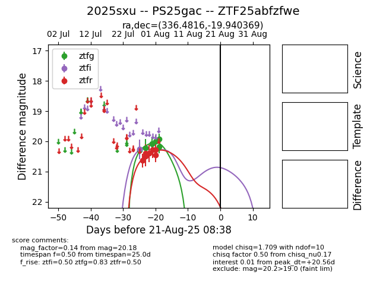

Target 2025sxu at 2025-08-21 11:07, see:
FINK: fink-portal.org/ZTF25abfzfwe
Lasair: lasair-ztf.lsst.ac.uk/objects/ZTF25abfzfwe
ALeRCE: alerce.online/object/ZTF25abfzfwe
TNS: wis-tns.org/object/2025sxu
YSE: ziggy.ucolick.org/yse/transient_detail/2025sxu
alt names
ZTF25abfzfwe (ztf,alerce)
2025sxu (tns,yse)
PS25gac (panstarrs)
coordinates:
equatorial (ra, dec) = (336.4816,-19.94037)
galactic (l, b) = (37.1980,-56.00647)
photometry
last ps1::w=20.52, ztfg=20.18, ztfi=20.26, ztfr=20.45
4 ps1::w, 7 ztfg, 1 ztfi, 7 ztfr detections
